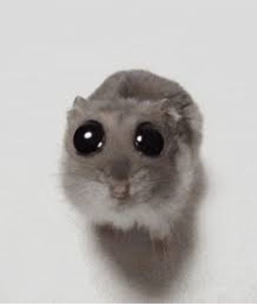

Mira a quien tienes junto a ti
El esta muy enamorado de ti, aunque a veces no sepa como tratarte :(
Ahora tu futuro noviecito ta tite :( -3 puntos de felicidad

Te acuerdasss??
Ese es uno de los dias de su vida que nunca va a olvidar jsjsjjs +3 de felicidad
Nuuuu por quee no te acuerdas?? -3 puntos de felicidad
Sabias que está medio menso
Pero no le digas tan feo que se pone tite -3 de felicidad
Bueno, un poquito entonces XD
Acabas de poner mas feliz a tu futuro novio, +5 puntos de felicidad
Sii *C emociona*
No has conseguido los puntos de felicidad necesarios para continuar, tu futuro novio esta ahora muy triste, alegralo!!
Ahora debes llegar a los puntos marcados en el mapa!!
Inicializando mapa y buscando tu ubicación...
Apoco si tilina??
Completaste y encontraste los dos lugares y mira donde estamos, donde esto empezo hace un año
¡Hemos llegado al final de las preguntas por ahora!
Aquí es donde iría el contenido de tu siguiente pantalla.